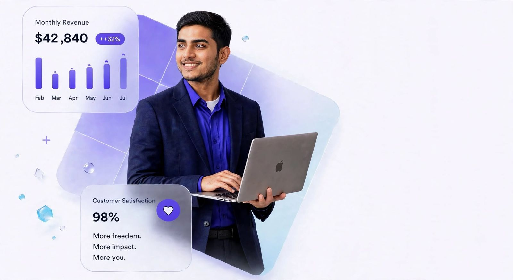

Products that transform industries
From revolutionizing restaurant operations to empowering civic engagement, our solutions are built to create real impact and drive measurable results.
Engineered for excellence
Two powerful platforms designed to solve real-world challenges with cutting-edge technology and user-centric design.
PureDine: Smart Restaurant Management System
Transform your restaurant into a digital powerhouse. Our comprehensive platform streamlines operations, enhances customer experience, and drives revenue growth through intelligent automation and real-time insights.
- QR
QR-Based Digital Ordering
Customers scan, browse, and order directly from their phones - no app installation required. Instant order placement with zero wait time.
- WB
Custom Branded Website
Professional, mobile-responsive website showcasing your menu, ambiance, and brand identity - fully managed and optimized.
- AN
Real-Time Analytics Dashboard
Track sales, identify bestsellers, monitor peak hours, and make data-driven decisions with comprehensive business intelligence.
- KD
Integrated Kitchen Display
Orders flow directly to kitchen screens, reducing errors, speeding up service, and improving overall operational efficiency.


Everything you need. All in one platform.
A comprehensive solution built for modern restaurants
Mobile-First Design
Optimized for smartphones and tablets, ensuring seamless experience across all devices
Menu Management
Easily update menus, add photos, set prices, and manage availability in real-time
Multiple Payment Options
Support for UPI, cards, wallets, and cash with secure payment gateway integration
Smart Notifications
Real-time alerts for new orders, kitchen updates, and customer feedback
Customer Feedback
Collect ratings and reviews to improve service quality and build reputation
Dedicated Support
Round-the-clock technical assistance to ensure smooth operations


TrionCam: Empowering Citizens, Enabling Governance
A revolutionary civic engagement platform that bridges the gap between citizens and government. Report issues, track resolutions, and actively participate in building better communities through transparent, data-driven governance.
For Citizens
- Photo ReportingCapture and report civic issues with location tagging
- Community VotingSupport issues that matter through upvoting system
- Live UpdatesReceive notifications on resolution progress
- Interactive MapVisualize all reported issues in your area
For Government
- Unified DashboardCentralized view of all citizen reports and priorities
- Task AssignmentAssign issues to relevant departments efficiently
- Data AnalyticsIdentify patterns and allocate resources smartly
- TransparencyBuild public trust through visible action
Three simple steps to better communities
From problem identification to resolution tracking
Report
Citizens photograph civic issues, add descriptions, and submit geo-tagged reports through the mobile app
Prioritize
Community members vote on issues. Government officials review and assign high-priority items to relevant departments
Resolve
Officials update progress in real-time. Citizens receive notifications and can verify resolutions, ensuring accountability
Powered by advanced technology
Live Issue Map
Real-time visualization of all reported issues on an interactive city map
Trending Issues
Most upvoted problems receive priority attention for faster resolution
Community Discussion
Collaborate with neighbors through comments and shared updates
Gamification
Earn points and recognition for active civic participation
From consultation to launch in 5-7 days
Our streamlined implementation process ensures you're up and running quickly
Consultation
Understanding your requirements and customizing the solution
Configuration
Setting up your branded platform with all necessary features
Training
Comprehensive training for your team on platform usage
Launch
Go live with dedicated support and ongoing assistance
Trusted by industry leaders
Real results from real businesses transforming their operations

Rajesh Kumar
Owner, Spice Garden★★★★★"The digital ordering system has completely transformed our operations. We've seen a 40% increase in table turnover and customers love the convenience. The analytics help us make smarter inventory decisions."

Priya Sharma
Manager, Urban Bistro★★★★★"Implementation was incredibly smooth. The team guided us through every step and our staff adapted quickly. The real-time kitchen display has eliminated order errors and improved our service speed significantly."

Arjun Patel
Owner, Coastal Kitchen★★★★★"The data insights are invaluable. We can now identify our bestsellers, optimize pricing, and plan inventory more effectively. Revenue has grown by 35% since we started using the platform."
Ready to transform your business?
Join 50+ businesses already experiencing the power of digital transformation. Get started today with our expert team.
Quick Launch
Go live in just 5-7 days with full support
Expert Support
24/7 technical assistance & training
Secure Platform
Enterprise-grade security & 99.9% uptime